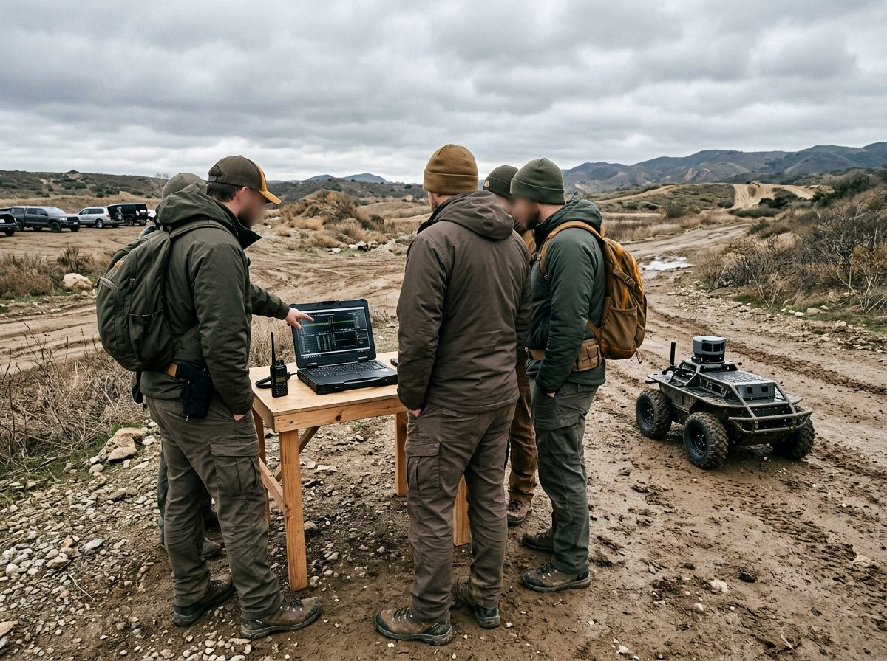
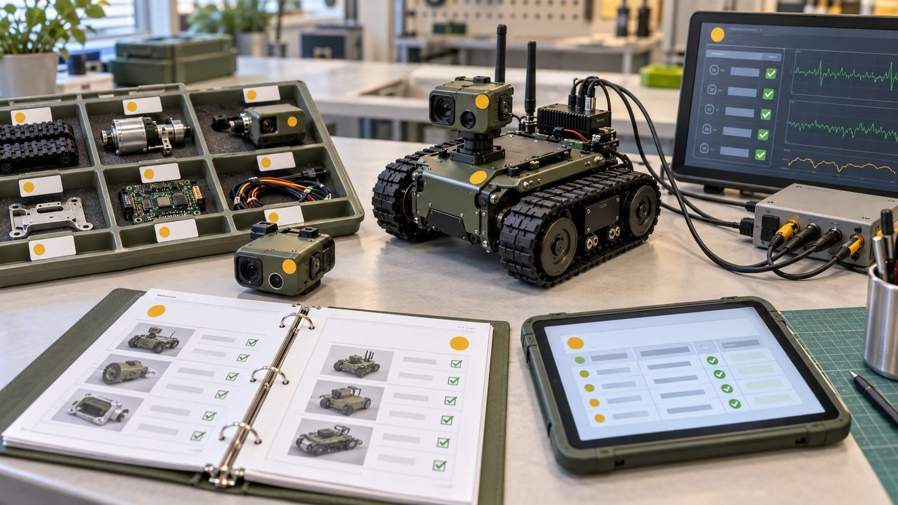

공장등록 이후
A4AI의
제조 진출 방안
지금 신청할 지원사업과
첫 제품 제안
기획부 · 2026.10.16 · 25분
목차
왜 지금 제조인가
구미의 로봇 특화단지·투자, 우리가 가진 기술
공장등록이 여는 기회
공급기업에서 제조기업으로, 공장에서 할 일
지금 신청할 공고
바로 가능 11건, 조건부 14건, 정기 공고 달력
첫 제품: 현장 음성 작업기록
왜 이것인지, 어떻게 작동하고 무엇이 좋아지나
6개월 실행 계획과 결정 요청
단계별 목표와 오늘 정할 네 가지
 개념 이미지 (AI 생성)
개념 이미지 (AI 생성)결론 먼저: 세 가지를 제안드립니다공장등록은 '제조기업' 자격을 얻는 계기입니다
바로 신청 가능 + 조건부
원문·첨부까지 38건 대조
가장 큰 기회 (10.27)
방산·모빌리티 스마트공장, 구미 8개사 — 단 '24~'25 납품 증빙이 관문
첫 제품
첫 적용은 우리 공장의 시제품 조립·시험 기록

왜 지금 제조인가
구미에 돈과 정책이 몰리고, 우리는 이미 기술이 있습니다
왜 지금 제조인가: 구미에 돈과 정책이 몰립니다로봇 특화단지 지정, 대기업 투자 계획, 제조 AX 사업이 한꺼번에
- 9.30 대구·경북 로봇 국가첨단전략산업 특화단지 지정 — 구미는 액추에이터·센서·제어기 등 핵심부품과 완성 로봇 생산
- 삼성 구미 19조 원 투자 계획 발표 (세부 내용은 아직 미정)
- 구미시 제조 AX 13개 사업, 방산혁신클러스터 (오른쪽)
- 공장이 있어야 이 흐름에 직접 참여할 수 있음
유무인복합체계, ~2027구미 제조 AX
13개 사업피지컬 AI 예산안
산업부 2026
우리는 이미 무인체계 AI 기술과 실적이 있습니다공장은 '새 사업'이 아니라 지금 기술을 제품으로 만드는 곳
- 기술 GCS Saker(관제·상황표시), Edge AI, 온프레미스 한국어 STT, LiDAR·카메라 야지 경로판단
- 과제 주관 4·공동 3 — 경북국방벤처 UGV 경로판단, 군용 무전기 AI칩 등 진행 중
- 기반 벤처기업·기업부설연구소, GPU 장비(RTX 5090·DGX Spark)
- 부족했던 것은 직접 만들고 시험하는 제조 기반

개념 이미지 (AI 생성)
공장등록이 여는 기회
공급기업에서 제조기업으로 — 신청할 수 있는 문이 달라집니다
공장등록 전후, 신청할 수 있는 자격이 달라집니다공급기업 경로만 있던 것에서 '도입기업' 경로가 새로 열림
AI 공급기업
- 남의 공장에 AI를 공급
- 공급기업 Pool 등록·구축실적이 먼저
- K-AI 경북형·대구 제조데이터 등
- 컨소시엄 상대가 있어야 신청
+ 구미 제조기업
- 우리 공장이 도입기업(수요기업)
- 방산·모빌리티 스마트공장 도입 신청
- 시제품 제작·시험·인증 지원
- 부품국산화·수요기업형 R&D 참여
공장에서 할 일: 부품·시제품을 만들고 시험합니다등록 예정 품목 두 가지 + 우리 AI의 첫 시험장
방산 무인체계 부품·시제품
UGV·드론용 센서·제어 모듈, 관제 장비
피지컬 AI·로봇 시험 제작
시험용 지그, 센서·제어 모듈, 소량 시제품
우리 AI의 첫 현장
조립·시험 기록을 음성으로 남기는 도우미를 먼저 적용

개념 이미지 (AI 생성)
지금 신청할 공고
2,785건에서 골라낸 바로 가능 11건, 조건부 14건
공고는 이렇게 걸렀습니다수집 공고 2,785건 → 원문·첨부까지 대조 38건 → 결과: 가능 11 · 조건부 14 · 확인 필요 3 · 불가 9
지금 바로 신청할 수 있는 공고 11건자격이 맞는 공고를 마감순으로 — 시료·계획서 등 신청 준비물은 따로 필요
| 마감 | 공고 | 받는 것 | 자격 근거 |
|---|---|---|---|
| 10.28 | 한국도로공사 상생형 창업·벤처 | 사업화 1천만 원 | 벤처·드론·자율주행 분야 |
| 10.29 | 빅웨이브 IR 초격차(로봇·AI) | VC 밋업·TIPS 연계 | 7년 이내 법인 |
| 10.30 | 구미 기업애로 원스톱 에이전트 | 공모사업 기획 도움 | 구미 사업장 |
| 11.02 | 민·군규격표준화 과제 제안 | 2027 R&D 과제화 | 산·학·연 누구나 |
| 11.27 | GERI 구미 스타트업 제작센터 | 시제품 직접 제작 | 업력 7년·구미 |
| 11.30 | 실외이동로봇 기술지원 (선착순) | 성능검증 무상·인증비 80% | 실외이동로봇 기업 |
| 11.30 | KIRO 온디바이스 AI 애로기술 | 500만 원 기술지도·부담 없음 | 지능형로봇 중소기업 |
| 11.30 | FITI 제조창업 공유공장 시험 | 부품·모듈 시험검사 | 업력 5년·타지역 가능 |
| 12.31 | 경북 AI데이터센터 테스트베드 | GPU 실증 환경 | IT·SW 기업 |
| 12.31 | 방산혁신클러스터 판로개척 | 전시회 1천만~2천만 원 | 경북·구미 방산 |
| 12.31 | 로봇산업진흥원 장비 임대 | 5축 가공기 등 9종(유료) | 로봇 중소기업 |
조건부 공고: 무엇을 갖추면 되는지조건을 하나씩 채우면 신청 가능한 14건 — 대부분 '파트너'와 '증빙'이 관건
| 마감 | 공고 | 갖춰야 할 조건 | 종류 |
|---|---|---|---|
| 10.27 | 방산·모빌리티 스마트공장 | '24~'25 방산 납품·거래 증빙, 공장등록증명, 부담 40% | 증빙 |
| 10.27 | 차세대 항공 기체부품(부산TP) | 드론 부품이 '항공 기체부품'으로 인정되는지 확인 | 확인 |
| 10.29 | KST 딥테크 투자(최대 5억) | 출연(연) 기술 실시권 확보 또는 기술 매칭 신청 | 확인 |
| 10.30 | Multi AI Agent R&D(수요기업) | 공장등록증명 + 자격 있는 공급 주관기관 확보 | 파트너 |
| 11.12 | 지역거점 AX R&D(완전자율로봇) | 대구 주관기관 확보, 공동기관으로 참여·부담 25% | 파트너 |
| 11.13 | 한계돌파 R&D(재난 요구조자 탐지) | 대학·출연연 컨소시엄과 연구책임자 | 파트너 |
| 11.30 | 국방기술 민간이전(경북TP) | 방사청 기술이전 승인, 이전받을 기술 선정 | 확인 |
| 12.18 | 로봇 엔드이펙터 시험(KTL) | 그리퍼 등 말단장치를 시험 제작 품목에 포함 | 증빙 |
| 수시 | 제조DX멘토단·장비 활용 3건 | 공장 가동 후 공정·장비 수요 확정 | 증빙 |
가장 큰 기회: 방산·모빌리티 스마트공장 (10.27)구미 8개사, 최대 6천만 원 — 납품 증빙 하나가 관문
- 대상: 구미 등 경북 5개 시군 중소·중견 방산·모빌리티 제조기업
- 6천만 원을 받으면 총사업비 1억, 회사 부담 4천만 원
- 관문: '24~'25 납품내역서·거래확인서 (필수 서류 5번)
- 제안: 10.19까지 경북TP 문의 → 안 되면 2027년 차수 대비
평가 11.5~6 대면(발표 20분) · 6개월 사업
정기 공고 달력: 다음 6개월1월(R&D·방산)과 3월(AX 통합공고)에 몰립니다 — 11~12월이 준비 기간
첫 제품: 현장 음성 작업기록
왜 이것인지, 어떻게 작동하고 무엇이 좋아지는지
첫 제품 방향: 왜 '현장 음성 작업기록'인가세 방향을 비교하면 A가 가장 빠르고 싸며, B·C와 함께 갈 수 있습니다
| A 음성 작업기록 | B 방산 부품·시제품 | C 피지컬 AI·로봇 | |
|---|---|---|---|
| 기존 기술 재사용 | 매우 높음 | 높음 | 중간~높음 |
| 설비 투자 | 낮음 | 높음 | 중간 |
| 첫 매출 (추정) | 6~12개월 | 1~2년, 양산 3년+ | 과제 6~12개월 |
| 핵심 위험 | 공장 소음 인식률 | 획득 기간·체계업체 | 삼성 계획 미정 |
제안: A를 첫 제품으로, 첫 적용은 우리 공장의 B·C 작업
공장에서 만드는 무인체계 부품·로봇 시제품의 조립·시험 기록을 음성으로 남겨, A로 실적을 만들고 B·C의 품질 증빙으로 씁니다.
- 국방 과제의 음성인식·Edge AI를 거의 그대로
- 공장 설비 투자 적음
- 사족보행 로봇 시제품 개발 약 2년 사례(B의 기간)
현장 음성 작업기록 도우미: 어떻게 작동하고, 무엇이 좋아지나말로 남기고, 사람이 확인하고, 시제품별 이력으로 쌓입니다
기록·보고서 작성 시간
목표 30% 단축 (계획치)
시제품별 조립·시험 이력
방산 납품·인증 때 근거
자체 솔루션 실적
스마트공장 단독 신청·공급기업 등록
구미 방산·로봇 협력사
온프레미스·소음 특화로 차별화
위험과 대응가장 큰 위험은 공장 소음 — 그래서 '사람 승인'을 기본으로 둡니다
| 위험 | 내용 | 대응 |
|---|---|---|
| 소음 | 87dB에서 범용 인식 오류율 약 37% | → 헤드셋·현장 용어 사전·담당자 승인 필수 |
| 보안 | 방산 협력사는 외부 전송을 꺼림 | → 공장 안 서버 처리, 시험·공개 데이터 분리 |
| 중복 | 진행 중 정부과제 결과물과 겹침 | → 협약 산출물·지식재산 경계 먼저 확인 |
| 경쟁 | 스마트글라스 음성 기록 제품 | → 한국어 잡음·방산 보안 특화 |
| 효과 | 시범에서 효과가 안 나올 수 있음 | → 4주 후 계속·축소·중단 기준 사전 합의 |
실행 계획과 결정 요청
6개월 계획, 그리고 오늘 정해 주셨으면 하는 네 가지
6개월 실행 계획10월 문 열기 → 11월 시험·실증 → 12~1월 등록·준비 → 2~3월 확산
날짜는 공고 마감일 또는 2026년 공고 시기 기준 예상 · 조건부 공고는 조건 확인 후 신청 · 목표는 내부 계획치이며 결과를 보장하지 않음
오늘 결정해 주셨으면 하는 네 가지이번 주 결정 → 10월 신청 3건 + 경북TP 문의
공장등록 완료일 확정
10.27 방산·모빌리티 스마트공장 도전 여부 (회사 부담 최대 4천만 원)
10월 신청 3건 담당자
도로공사 · 빅웨이브 IR · 구미 원스톱 에이전트
음성 기록 4주 시범
공장 공정 1개와 담당 인력 배정
공급기업 등록 준비
스마트공장·AI바우처 Pool — 1월·3월 정기 공고 대비
질의응답
부록: 판정 기준 · 조건부 원문 근거 · 불가 이유 · 7일 규칙 제외 공고
정기 공고 · 숫자 출처 · 시범 측정 방법 · 회사 실적 · 예산 기준 · 확인 목록
부록 1 · 판정 기준과 걸러 낸 과정
- 회사 조건: 2024.1.15 설립(업력 2년 9개월), 구미, 상시근로자 10~29명, 벤처·기업부설연구소, 공장등록 예정
- 판정: 가능(지금 자격 충족) / 조건부(조건을 갖추면 가능) / 확인 필요(기관 문의) / 불가
- 7일 규칙: 발표일(10.16) 기준 마감 7일 이하(10.23까지)는 준비 불가로 보고 이번 검토에서 제외
- 근거: 기업마당 상세와 첨부(HWP·HWPX·PDF·ZIP) 전체를 텍스트로 바꿔 대조, 쪽수·조항 기록
- 같은 공고라도 역할(주관·공동·수요·공급)이 다르면 따로 판정
부록 2 · 조건부 공고의 원문 근거
- 방산·모빌리티 스마트공장: 제출서류 5번 '방산·모빌리티 관련 제조기업 증빙 — 납품내역서 또는 거래확인서(24~25)', 7번 최근 3개년 재무제표, 10번 공장등록증명
- 같은 공고: '솔루션 개발 인력 및 역량을 보유한 도입기업은 공급기업 없이 단독 신청 가능(현물인건비 계상 불가)'
- 지역거점 AX R&D: '(주관) 대구광역시 소재 … 역외 기관은 협약 전 본사 또는 연구소 대구 이전', 중소기업 민간부담 25% 이상
- KST 딥테크 투자: 출연(연) 기술 실시권 확보(또는 확보 가능), 업력 5년 이내, 투자금 납입 전 투자액 10% 이상 기술료
- 차세대 항공 기체부품(부산TP): 지원대상 '항공 산업 관련 제조기업 … 연구시설(공장·연구소) 보유', 기업부담 현금 10% 이상
부록 3 · 불가 판정 9건과 이유
- 경북형 스마트공장 기초 2차: 남은 자리가 안동 1·김천 1개사 — 구미 불가
- 대경 이음 상생 R&D: 지원기간 10.30 종료, 고용 3~6명 의무 / Multi AI Agent 점프업 주관: 선행 스마트제조 R&D 완료 기관만
- 대구 기술닥터·대전 3D프린팅 시제품: 본사 소재지(대구·대전) 요건
- 포항 스마트공장 3차: 포항 소재 / 물류로봇 시험: 물류로봇 제품 없음 / 대구 AI로봇 수요조사: 대구 AI·SW 기업
- GERI 방산 시스템반도체 시제품제작: 접수 종료 → 2027년 정기 공고 대비 (드론용 Edge AI 칩 분야 포함)
부록 4 · 7일 규칙으로 뺀 공고 (다음 차수 대비)
- 10.16 GERI 온디바이스 AI 기술지도(최대 300만 원, 1개사) — 오늘 18시 마감, 원하시면 별도 신청 가능
- 10.16 GERI 방산용 시스템반도체 실증 기술지원 2차 — 2027년 차수 대비
- 10.19 방산 중소기업 컨설팅(최대 3천만 원, 75%) — 2027년 1차(작년 4월)
- 10.23 K-AI 경북형 동반성장 — 앵커 중견기업을 미리 확보해 2027년 대비
- 10.18 YUnicorn 시제품(대학생·교원 대상), 10.23 원전 공급기업 다변화(분야 아님)
부록 5 · 기관별 정기 공고 요약
- 스마트공장(중기부): 정부형 고도화 작년 11~12월 공고, 최대 2억·50% / 공급기업 Pool 등록은 상시
- AI·데이터(과기정통부): AI바우처 3월(최대 2억), 공급 Pool 매년 재등록 / 데이터바우처 2~3월(최대 4,500만~7,500만 원)
- 방산(방사청·국기연): 부품국산화 1·8월, K-방산 스타트업 3·7월(최대 1억), 방산 컨설팅 4·10월
- 창업·R&D(중기부): 디딤돌 1~4월(최대 2억), TIPS 상시(최대 8억), 창업도약패키지 1월(업력 3년 초과)
- 경북: 국방 역량강화 1월, 무인비행체 2월, 군수품 상용화 3월, 국방기술 민간이전 1~11월
부록 6 · 숫자와 출처
- 구미 로봇 특화단지 지정 2026.9.30(아이뉴스24), 구미 역할·삼성 19조 계획(경북매일 2026.9)
- 구미 제조 AX 13개 사업 1,989억 원(더팩트 2026), 방산혁신클러스터 499억 원(매일신문 2023.4)
- 피지컬 AI 2,149억→4,022억 원(산업부 2026 예산안, 뉴시스 2025.9)
- 스마트공장 도입기업 75.5% 기초 단계(한국경제 2025, 2023년 기준), 미국 감독자 65% 교대당 최대 4시간 수작업 기록(L2L 조사 2026)
- 87dB 소음 WER 약 37%(MDPI 2024), 음성 작업일지 시간 40%·오류 35% 감소(Softude 2025 업체 자체 발표)
부록 7 · 음성 작업기록 시범 측정 방법
- 대상: 공장의 조립·시험 공정 1개, 시료번호 단위로 4주
- 기준선: 시범 전 2주 동안 기록 1건 작성·검수 시간, 시험결과 검색 시간, 보고서 작성 시간, 누락·오기록 건수
- 비교: 같은 공정·같은 인원으로 시범 후 측정 — 시간 절감률 = (기존−개선)/기존
- 계속 기준: 기록 부담이 줄고 오기록이 늘지 않을 것 / 중단 기준: 재입력이 늘거나 인식 오류로 승인 시간이 더 걸릴 것
- 주의: 1~2건 결과를 전 직원에 곱해 연간 절감액으로 부풀리지 않음
부록 8 · 회사 기술·과제 상세
- 특허 등록: 정밀지도 데이터 제공, 전자장치 제어 / 통상실시권: 무인기 추적 지상통제장비
- 특허 출원: 드론 아군 밀집도 경고, 3D 포인트클라우드 이동가능성 그래프(금오공대 공동), 골프 로봇 캐디
- 주관 과제: 전주기 방산 창업, 초기창업패키지 딥테크, 창업중심대학 군용 무전기 AI칩(수행 중), 경북국방벤처 UGV 야지 경로판단(수행 중)
- 공동 과제: RISE 드론, RISE LiDAR SLAM, RISE 자율순찰 로봇(수행 중)
- 준비 중: K-방산 스타트업 1단계(전장 음성 데이터화), 민군기술이전 스핀오프(재난수색영상·산업시설 자동순찰)
부록 9 · 지원금과 회사 부담 계산 기준
- 방산·모빌리티 스마트공장: 총사업비의 60% 이내·최대 6천만 원 → 6천만 원을 받으면 총사업비 1억 원, 회사 부담 4천만 원 (부가세 별도)
- 회사 부담 중 현물(인건비·클라우드)은 부담금의 20%·최대 800만 원까지, 단독 신청이면 현물 인건비 불가
- 대구 제조데이터 컨설팅: 기업 현금 부담은 '정부지원금의 30%' (예: 정부 800만 원 → 회사 240만 원)
- 지역거점 AX R&D: 중소기업 민간부담 25% 이상 / 부산 항공부품: 현금 10% 이상 + 부가세 선집행
- 지원금은 매출이 아님 — 제품 매출은 외부 고객의 유상 시범·발주로 따로 확인
부록 10 · 발표 뒤 바로 확인할 것
- 공장등록 완료 예정일, 공장 주소가 본사와 같은지(종된 사업장 여부)와 등록 업종
- '24~'25 방산·모빌리티 납품·거래 증빙 유무 → 경북TP에 국방 과제 실적 인정 여부 문의 (10.19까지)
- 보유 통상실시권의 기술 출처(출연연 여부) → KST 딥테크 투자 신청 판단 (10.29)
- 실외이동로봇 기술지원에 낼 시제품 모델(UGV·자율순찰 로봇)과 상태
- 경북AX랩 현재 접수 여부, 부산TP에 드론 부품의 항공 기체부품 인정 여부 문의